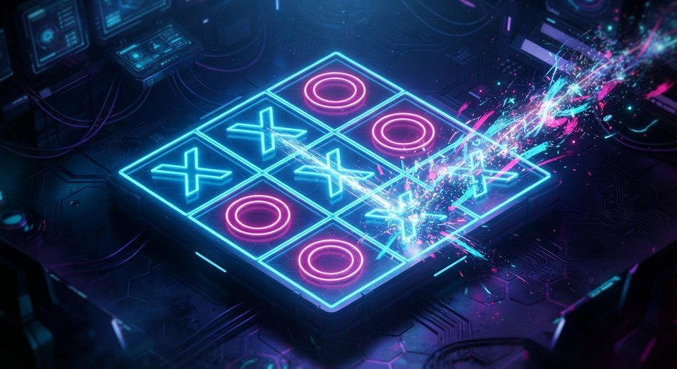

Console portátil · ARM64
O sistema, e os apps, no mesmo lugar.
O Giochi OS é a base Linux limpa construída com Buildroot, entregue como imagem pronta para o cartão. Os apps vivem fora da imagem: você instala pela loja, na partição gravável, e pode substituí-los quando quiser.
release(s) publicada(s) · gerado em

Imagens por aparelho
Cada imagem é específica do hardware: kernel, device tree, driver de painel e layout de partição são do aparelho, não genéricos.
Gravar no cartão
Confira o checksum
sha256sum -c SHA256SUMSSe não conferir, o arquivo veio corrompido. Baixe de novo.
Descubra o dispositivo
lsblkO cartão costuma ser /dev/sdX ou /dev/mmcblkX. Confira o tamanho.
Grave
sudo dd if=giochi-*.img of=/dev/sdX \
bs=4M conv=fsync status=progressO cartão será apagado por completo. conv=fsync não é opcional — sem ele a gravação pode ser truncada.
Como é feito
Giochi System
Monta o Linux limpo com Buildroot: kernel, rootfs, boot, drivers e painel de cada aparelho. Nada de interface aqui.
Giochi app
Os apps e jogos, cada um com seu manifesto de requisitos. O sistema compara o manifesto com o perfil do aparelho antes de instalar.
Giochi os
Junta os dois: embute os apps de imagem no rootfs e publica a imagem final com checksum. É este site.
Por que apps ficam fora da imagem
A raiz é assinada e imutável. Apps instalados em /user podem
ser substituídos pelo usuário — inclusive por uma versão modificada, que
é o que a GPL exige de software GPL. Por isso a loja fica no computador e
envia o pacote pronto, em vez de embutir tudo na imagem.